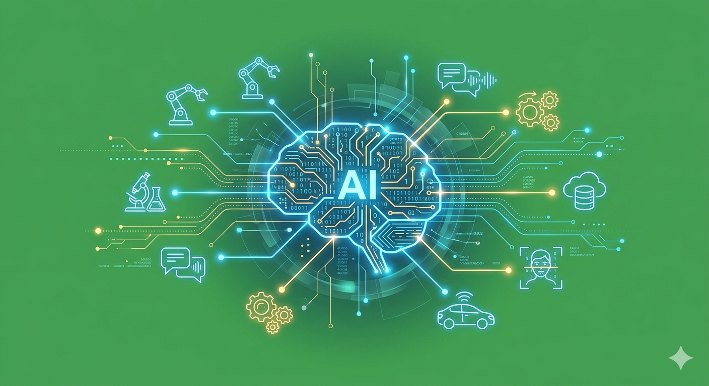

Vivemos em uma era em que a Inteligência Artificial está transformando rapidamente a forma como consumimos informação e desenvolvemos tecnologia. Pensando nisso, este evento foi criado para promover conhecimento, consciência digital e capacitação prática.
Durante o encontro, especialistas irão apresentar palestras sobre conscientização em Inteligência Artificial, abordando temas importantes como o impacto da IA no dia a dia e como identificar imagens e vídeos falsos (deepfakes), um dos grandes desafios da informação na internet atualmente.
Além das palestras, o evento contará com um workshop prático de desenvolvimento de aplicativos mobile, onde os participantes terão a oportunidade de aprender conceitos e técnicas para criar aplicativos para Android e iOS, explorando ferramentas modernas e boas práticas de desenvolvimento.
O objetivo é unir educação tecnológica, pensamento crítico e prática, preparando os participantes tanto para compreender os riscos e oportunidades da IA quanto para desenvolver suas próprias soluções tecnológicas.
Este evento é ideal para estudantes, desenvolvedores, profissionais de tecnologia e qualquer pessoa interessada em inovação digital.